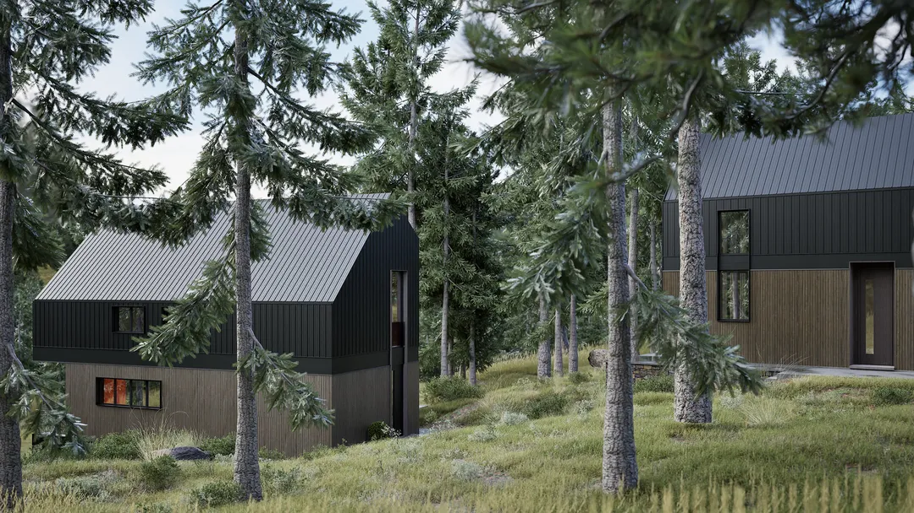

Slavoljub Ljubić
Architect, founder
About QBCARCHITECTS /
Architects Slavoljub and Vladica Ljubić, Belgrade, since 2010
Start a project
QBCARCHITECTS was founded in Belgrade in 2010. Since then we have completed more than 150 projects for over 80 clients in Serbia and abroad: houses and villas, apartments, clinics, restaurants, mixed-use buildings and larger sites.
Every project begins with a pattern study. Before we draw a form, we look for the relationships that repeat on a site and in the way people use a building: where the light comes from, how people arrive, where they gather and where they want to be alone, how the building meets the ground. Slavoljub has been developing this method since 2009, and today we are turning it into our own design software, which lets us test more variants early and choose between them with better arguments.
We model every building in Rhino and check its dimensions in 3D. Plans, sections and elevations are taken from that model and finished as technical drawings, and the renders come from the same model, so what you see in an image is what is in the drawings. Costs and the permit path are part of the design from the first sketch, so regulation shapes the project early instead of stopping it late.
Founders
See our workArchitect, founder

Architect, founder, head of design
We would rather spend a week on the plan than a year fixing it on site
Services /
One studio carries the project through every stage: pattern study and concept, design development with the engineers, documentation and permits, and architectural supervision on site. We work with clients in Serbia and abroad, and shape the scope to what you need, from a single interior to a whole building.
Permits and regulation /
We know the Serbian construction regulations and CEOP, the national e-permit system, in detail, and we plan every project around them.
For clients this means fewer surprises. Planning conditions, building permits and use permits are part of the schedule from day one, not something discovered along the way. For investors from abroad, we handle the Serbian side of the process.
Start a project
Share a few lines about your site and what you need. We reply personally.